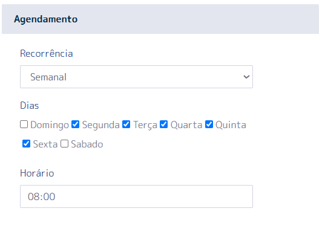

Bem-vindo à Documentação N4LINK
A plataforma N4LINK é um iPaaS (Integration Platform as a Service) que conecta sistemas legados e modernos de forma ágil, segura e escalável.
Sistemas já integrados


Acesso à Plataforma
Para aceder à plataforma N4LINK basta utilizar a URL: https://go.n4s-hip.com/signin, inserir o seu e-mail e palavra-passe fornecidos pela nossa equipa:

A nossa plataforma exige o uso do MFA. No primeiro acesso, será direcionado para o ecrã de leitura do QRCODE, onde poderá utilizar a aplicação da sua preferência (Google Authenticator, Microsoft Authenticator, etc).

Após ler o QRCODE, clique no botão "Continuar" para ser direcionado ao ecrã de preenchimento do código MFA:

Se tudo estiver correto, será direcionado para a página inicial da plataforma:

Estrutura de Navegação
A nossa estrutura de navegação baseia-se no menu que fica na lateral esquerda, onde cada opção define qual vai ser o tipo da tecnologia utilizada na requisição da origem, registo de serviços seria origem REST, registo de base de dados seria origem base de dados, registo de SOAP seria origem SOAP, registo de ficheiros seria origem leitura de um FTP/SFTP de qualquer tipo de ficheiro (TXT, CSV, XML...), Registo de SAP-RFC seria para origem RFC's ou BAPI's específicas do mundo SAP.

SERVIÇOS EM EXECUÇÃO:
No menu Painel de Controlo na opção Serviços em Execução, terá acesso a todas as filas activas e cada conector na nossa plataforma possui a sua fila própria. Ou seja, haverá uma fila para cada tema com opção de "PARAR" a fila, "REINICIAR", ou até mesmo "ELIMINAR" mensagens.
VALIDAR COMUNICAÇÃO:
Serve como um facilitador para que a plataforma teste via TELNET a comunicação com a URL fornecida.
EXTRACTOR DE DADOS:
Ferramenta semelhante ao estúdio SQL. Aqui é possível executar sintaxes na sua base de dados, caso seja o seu modelo e exportar para um excel ou até mesmo validar a sintaxe das consultas.
VARIÁVEIS GLOBAIS:
É uma forma de registar conteúdos, seja para não deixar exposto no conector ou até mesmo facilitar construções utilizando essas variáveis sem precisar ficar a repetir conteúdos.
CENTRO DE NOTIFICAÇÕES:
Cria alertas de maneira activa, ou seja, a plataforma envia um e-mail de acordo com o que foi configurado. Exemplo: Deseja criar um alerta para sempre que a resposta do destino voltar ERRO 500, seja enviado automaticamente um e-mail para o departamento de TI.
ENVIO DE FICHEIRO:
Fazer envios de ficheiros csv, txt numa tabela do N4LINK, com possibilidade de aceder aos conteúdos pelos conectores. Exemplo: Para gerar as vendas do e-commerce para o ERP é obrigatório o registo específico, mas os dados não são transmitidos do e-commerce, mas com essa função, é possível criar uma regra a partir de um campo do e-commerce para uma folha de cálculo e determinar o conteúdo correto para enviar para o ERP.

Serviços Em Execução
Aqui conforme relatado anteriormente, são as filas activas na nossa plataforma, onde é mostrado o ID do conector após o hífen na coluna FILA:

Nesta opção, é possível verificar as filas activas na plataforma N4LINK, onde é mostrado o ID do conector após o hífen na coluna FILA.
COLUNA FILA:
É exibido o seu código de empresa na plataforma N4LINK + ID do
conector.
COLUNA EMPRESA:
É exibido o nome de empresa registado.
COLUNA STATUS:
Indica a situação actual da fila:
- VERDE indica que está em execução;
- AMARELO indica que está em processo de parar/reiniciar;
- VERMELHO indica que está parada.
COLUNA ACÇÕES:
- BOTÃO DELETE - elimina as mensagens da fila, na sequência já para a fila e sobe ela novamente
- BOTÃO PURGE - elimina as mensagens actuais da fila
- Botão vermelho (-) é o botão que para a fila
- Botão de RESTART - azul com duas setas, uma de encontro à outra - serve para parar e subir novamente a fila
- Botão PLAY - verde - inicia a fila que está parada
Validar Comunicação
Neste ecrã consegue validar se o endereço de origem (N4LINK) que pode ser testado como localhost, ou se for um endereço mais específico pode falar com o nosso suporte para saber em específico qual é o endereço LAN da máquina que os seus conectores estão a correr, possui comunicação com um outro endereço e porta, ou seja, é executado um TELNET para demonstrar se a comunicação está funcional, Exemplo comunicação com o Google:


Extractor de Dados
Configure o seu acesso com uma base de dados na qual a nossa plataforma possui ligação e execute consultas SQL ou até mesmo, procedures para verificar se a sintaxe está funcional. Ainda é possível extrair o resultado apresentado para uma folha de cálculo Excel. Na opção de DRIVER, selecione qual é a base de dados. . Em URL existe o IP/Endereço que a base de dados está a ser executada; . PORTA - qual a porta em que se encontra a base de dados; . UTILIZADOR - faça o login que tem acesso à base de dados; . PALAVRA-PASSE - insira a palavra-passe do login utilizado; . BASE DE DADOS - insira o nome da base de dados a ser lida; . SCHEMA - insira o schema, se for o caso. Exemplo:


Variáveis Globais
Painel onde somente os perfis configurados como ADMINISTRADOR possuem acesso, ou seja, pode criar variáveis que contêm dados para autenticação como exemplo e partilhar com quem for criar os conectores somente os nomes das variáveis, blindando assim, o conteúdo. Este processo contribui muito para a produtividade, pois não é necessário repetir conteúdos nas suas criações de Conectores. Ecrã que apresenta a sua empresa e quantas variáveis criadas possui:

Novo registo de variável:

Centro de Notificações
Central para configuração de alertas de maneira activa via e-mail. É possível criar regras específicas para quando a condição for válida e disparar um e-mail para o responsável pela análise do erro. Ecrã inicial que apresenta a sua empresa e quantos alertas possui registados:
Ecrã para criação de um novo alerta:

Exemplo de criação da estrutura do e-mail, onde o conteúdo '{{destiny}}' é uma variável global da plataforma N4LINK que armazena toda a resposta do destino.

Envio de Ficheiros
Nesta interface, é possível enviar ficheiros para utilizar os conteúdos nos seus conectores, seja para enriquecer ou validar um dado. Isto é, ter dados na plataforma onde nenhuma das pontas integradas conseguiria informar. Ecrã que apresenta quantos ficheiros enviou para a sua empresa:

Ecrã para configuração de envio de um novo ficheiro. Selecione o tipo (no exemplo abaixo: CSV); Qual o delimitador de conteúdos (no exemplo: ponto e vírgula (;)); Selecione o ficheiro que quer fazer envio (no exemplo: convert.csv); Guarde para confirmar o envio.

Integração via REST
Para a configuração de integrações com origem REST, menu Integrações - Registo de serviços terá como ecrã inicial:

Para os conectores já criados, visualizará: . Botões de LOG responsáveis por armazenar todos os dados de uma transação executada; . Botão VIEW - apresenta dados que foram armazenados numa tabela intermediária, conceito utilizado quando normalmente no sistema de origem não é possível controlar o que já foi integrado para ser reenviado ou não; . Botão LAYOUT - armazena toda a configuração do conector; . Botão CONTROLO DE VERSÕES - botão cinzento ao lado do botão LAYOUT; . Botão de CÓPIA - é um facilitador. Neste item, é possível reaproveitar configurações de um conector já produzido; . Botão PLAY - é utilizado para disparar a integração de maneira imediata. Na configuração do conector, seja um novo ou alteração de um existente, o preenchimento do formulário REST é semelhante às ferramentas de uso para teste de API's de mercado. Um exemplo prático é o POSTMAN, é selecionado se deve ser verificado o certificado do endereço a ser consumido ou não, o VERBO a ser utilizado, URL, Endpoint. Caso seja uma API paginada, qual o conceito de paginação; caso tenha autorização, qual o tipo utilizado, e os dados do HEADER, que é dinâmico e pode ser inserido quantos forem necessários pelo botão de adicionar (+).

Integração via SOAP
Para a configuração de integrações com origem SOAP, menu Integrações - Registo de SOAP, aparecerá como ecrã inicial:

Para os conectores já criados visualizará: . Botões de LOG - responsáveis por armazenar todos os dados de uma transação executada; . Botão VIEW - apresenta dados que foram armazenados numa tabela intermediária, conceito utilizado quando normalmente no sistema de origem não é possível controlar o que já foi integrado para ser reenviado ou não; . Botão LAYOUT - armazena toda a configuração do conector. . Botão CONTROLO DE VERSÕES - botão cinzento ao lado do botão LAYOUT; . Botão de CÓPIA - é um facilitador. Neste item, é possível reaproveitar configurações de um conector já produzido; . Botão PLAY - é utilizado para disparar a integração de maneira imediata. Na configuração do conector, seja um novo ou alteração de um existente, o preenchimento do formulário SOAP é bem semelhante às ferramentas de uso para teste de API's de mercado. Por exemplo o SOAPUI, é selecionado o que deve ser verificado, o certificado do endereço a ser consumido ou não, insere o WSDL que contém os métodos. Caso seja uma API paginada, qual o conceito de paginação, se existir autorização qual o tipo utilizado, e os dados do HEADER, que é dinâmico e pode ser inserido quantos forem necessários pelo botão de adicionar (+).


Integração via Ficheiros
Para a configuração de integrações com origem FTP/SFTP para leitura de ficheiros, menu Integrações - Registo de base de dados terá como ecrã inicial:

onde para os conectores já criados encontra os botões de LOG responsável por armazenar todos os dados de uma transação executada, botão LAYOUT que armazena toda a configuração do conector, botão CONTROLO DE VERSÕES que seria o botão cinzento ao lado do botão layout, botão de CÓPIA que é um facilitador caso tenha como reaproveitar as coisas de um conector já feito e o botão PLAY que é utilizado para disparar a integração de maneira imediata. Na configuração do conector seja um novo ou alteração de um existente, o preenchimento do formulário para ligar e recolher dados na base de dados é bem parecido com ferramentas de uso para ligações em FTP/SFTP, coloca na URL o ENDEREÇO:PORTA e à frente quebrando por barras se for o caso a navegação entre as pastas, no Exemplo abaixo após fazer login e estar na raiz do FTP estou a indicar para ir até à pasta TESTE. Fora a parte da ligação define como vai ser a quebra dos ficheiros da pasta selecionada, no caso do nosso teste são todos ficheiros CSV quebrados por ponto e vírgula (;). Ainda temos neste sector um condicional para ignorar as linhas do ficheiro, seja para saltar o cabeçalho do ficheiro por Exemplo ou até mesmo descartar linhas baseado em regras, no Exemplo abaixo estamos a descartar tudo que na primeira coluna do ficheiro tiver o texto ORIGEM ou DATA.

Já para a secção de conversão de parâmetros temos o tratamento do dado em si, onde indicamos qual é a coluna de origem e qual o nome do atributo que a API REST de destino vai receber, esse mapeamento pode ser do tipo Função onde é habilitado um livro para inserção de funções em javascript, um dado fixado seja de tipo TEXTO, NÚMERO ou LÓGICO, ou dinâmico onde é apanhado exatamente o conteúdo da origem e enviado para o destino no atributo configurado, então no Exemplo abaixo temos a coluna 14 indo para o atributo taxIdTo no destino, já para a coluna 7 que vai para o atributo amount temos uma função em javascript devido a ser um tratamento mais complexo do dado, transformar corretamente as unidades de milhar, dezena... Depois transformar no tipo FLOAT.


Integração via Base de Dados
Para a configuração de integrações com origem BASE DE DADOS, menu Integrações - Registo de base de dados terá como ecrã inicial:

onde para os conectores já criados encontra os botões de LOG responsável por armazenar todos os dados de uma transação executada, botão LAYOUT que armazena toda a configuração do conector, botão CONTROLO DE VERSÕES que seria o botão cinzento ao lado do botão layout, botão de CÓPIA que é um facilitador caso tenha como reaproveitar as coisas de um conector já feito e o botão PLAY que é utilizado para disparar a integração de maneira imediata. Na configuração do conector seja um novo ou alteração de um existente, o preenchimento do formulário para ligar e recolher dados na base de dados é bem parecido com ferramentas de uso para ligações via JDBC de mercado, como por Exemplo o DBEAVER, seleciona qual é a base de dados que vai utilizar no Exemplo abaixo SQL SERVER, URL, porta, utilizador e palavra-passe, e o SCHEMA somente se for necessário, no campo QUERY insere a sua sintaxe seja uma consulta, uma procedure, no Exemplo abaixo estou a montar um SELECT

Integração via SAP RFC/BAPI
Para a configuração de integrações com origem SAP ECC, menu Integrações - Registo de SAP-RFC terá como ecrã inicial:

onde para os conectores já criados encontra os botões de LOG responsável por armazenar todos os dados de uma transação executada, botão LAYOUT que armazena toda a configuração do conector, botão CONTROLO DE VERSÕES que seria o botão cinzento ao lado do botão layout, botão de CÓPIA que é um facilitador caso tenha como reaproveitar as coisas de um conector já feito e o botão PLAY que é utilizado para disparar a integração de maneira imediata. Na configuração do conector seja um novo ou alteração de um existente, o preenchimento do formulário para ligar é bem parecido com o preenchimento dos dados no SAP LOGON GUI, onde preenche o servidor de aplicação, se for SAP-ROUTER a URL do router, utilizador, palavra-passe ID do sistema, número da instância, client e idioma. Após os dados de ligação informa qual é a RFC ou BAPI a ser consumida, no Exemplo abaixo é uma RFC personalizada chamada CADASTRO_MATERIAIS, nos parâmetros de entrada informa os parâmetros que a RFC/BAPI espera, no Exemplo abaixo temos os parâmetros data de (IM_LAEDA_DE) e o data até (IM_LAEDA_ATE)

Mapeamento de Atributos Destino REST
Sempre que o Destino for REST, independente da tecnologia da origem (BASE DE DADOS, SOAP, FICHEIRO, SAP RFC/BAPI), vai existir na página o conversor de parâmetros. Na primeira coluna é possível configurar determinados atributos para popular a tabela intermediária da plataforma e fazer o descarte caso retorne. Na segunda coluna é pontuado o tipo do MAPEAMENTO. Pode ser: . DINÂMICO - modelo que utiliza o conteúdo da origem e o envia para o destino. No exemplo está a ser utilizado o conteúdo do atributo MATNR que está a chegar e enviando para o atributo CODE no destino. . FIXO - pode ser um texto, um número ou lógico. O exemplo está a fixar o conteúdo TRUE como dado lógico para mandar no atributo is_integration, até mesmo uma função. Veja no exemplo o atributo IS_ACTIVE que habilita um livro acima para que possa ser criada a sua função em javascript.

Quando é utilizado o conceito de função ao entrar no editor (botão do livro) é exibido um ecrã para criar a função. Neste ecrã é possível utilizar variáveis globais da plataforma para captar conteúdos: . Variável record - armazena os dados que voltaram da requisição do formulário origem; . Detail - armazena o conteúdo da requisição do formulário detalhe; . Parent - armazena o conteúdo que chega do conector PAI; . Caso este conceito seja utilizado, uploadedFiles armazena ficheiros em csv que foram enviados para a empresa. exemplo abaixo é feito um if simples onde caso exista na origem o atributo LVORM, será retornado. Caso contrário, fixamos o retorno TRUE.

Estrutura de Body Destino Base de Dados
Quando o destino é base de dados é possível utilizar o conceito de duas chaves: abrindo e fechando informando o nome de atributo que chegou na origem a ser utilizado. A partir daí, é possível estruturar a sua procedure de maneira completa (INSERT, SELECT, UPDATE, etc) e onde desejar trocar os conteúdos de acordo com os atributos que chegam na origem. No exemplo abaixo estamos a chamar uma procedure BDIPIERPROD onde no parâmetro CodBarras está a ser utilizado o conteúdo do atributo CODBARRAS que chega da origem REST.
Estrutura de Body Destino SOAP
Quando o destino é SOAP é possível utilizar o conceito de duas chaves: abrindo e fechando informando o nome de atributo que chegou na origem a ser utilizado. No exemplo abaixo há o {{codigoCfo}} ou também, é possível utilizar o conceito de dois parênteses rectos, no qual o conteúdo entre eles é uma sintaxe em javascript. Exemplo: tag NOMEFANTASIA está a retornar o que chega da requisição da origem (variável record) apanhando o atributo firstName que está dentro do objeto clientProfileData.


Estrutura de Body Destino RFC
Quando o destino é base de dados é possível utilizar o conceito de duas chaves: abrindo e fechando informando o nome de atributo que chegou na origem a ser utilizado. A partir daí, é possível estruturar a sua procedure de maneira completa (INSERT, SELECT, UPDATE, etc) e onde desejar trocar os conteúdos de acordo com os atributos que chegam na origem. No exemplo abaixo estamos a chamar uma procedure BDIPIERPROD onde no parâmetro CodBarras está a ser utilizado o conteúdo do atributo CODBARRAS que chega da origem REST.
Configuração de Agendamento
Para agendamento, há as opções de recorrência, divididos por hora, minuto ou segundos:

Execução diária - é informado um horário para execução:

Agendamento semanal - pontua um ou mais dias da semana e qual horário executar:
Agendamento mensal - informa apenas um dia do mês para execução e qual o horário:

Agendamento do tipo FAIXA - informa um range de horas do dia para a execução e de quanto em quanto tempo. No exemplo abaixo foi configurado para executar da meia-noite até às seis da manhã, com um disparo a cada 30 minutos.

API Ouvinte (Webhook)
É possível configurar o conector para ser receptivo, no qual, no cabeçalho é possível informar que é um conector ouvinte e configurar um nome de método a ser externalizado. A URL e o token são únicos para cada cliente e são informados pela nossa equipa no momento da criação do registo da Empresa para liberação de uso na plataforma.

No exemplo abaixo a empresa N4LINK possui a URL: https://go.n4s-hip.com/public/23/ como base. Após a última barra virá o método que será configurado como ouvinte. Exemplo: Foi criado o conector abaixo expondo o método /meuWebhook onde a plataforma está a externalizar um verbo POST que irá receber um body de alguém que estiver a requisitá-la. A partir do recebimento desse body é possível dar sequência noutras atividades no mesmo modelo quando é a plataforma que está a requisitar. Exemplo de URL e TOKEN disponibilizado pela nossa equipa:

Conceito Conector Pai
Existe a possibilidade de encadear conectores para enriquecimento de dados ou até mesmo por questão de sequência lógica. Exemplo: A sua empresa está a integrar encomendas de um ecommerce. Obrigatoriamente, antes de descer a encomenda é necessário registar o cliente. Aqui, poderia ser configurado para o conector de encomendas chamar o conector de clientes primeiramente e só após esse processo, o cliente ser integrado para descer a encomenda de venda. É possível informar ao conector pai, qual é o tipo de execução: se é executado registo a registo ou somente após o último registo integrado ao conector pai ou, até mesmo, se deve seguir em caso de erro no conector pai ou não.